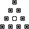

x occurs both free and bound. This section presents three extended exercises that require the whole range of skills: design by recipe, including generative recursion, and the addition of accumulators for various purposes.
Figure 91 recalls the structure and data
definitions of family trees from section 14.1 where
we developed the function blue-eyed-ancestor?, which determined
whether an ancestor family tree contained a blue-eyed family member. In
contrast, all-blue-eyed-ancestors, the function in
figure 91, collects the names of all blue-eyed
family in a given family tree.
The function's structure is that of a tree-processing function. It has two
cases: one for the empty tree and another one for a child
node. The latter clause contains two self-references: one per parent. These
recursive applications collect the names of all blue-eyed ancestors from
the father's and the mother's family tree; append combines the two
lists into one.
The append function is a structurally recursive function. Here it
processes the two lists that the natural recursions of
all-blue-eyed-ancestors produce. According to
section 17.1, this observation suggests that the
function is a natural candidate for a transformation into
accumulator-style.
;;all-blue-eyed-ancestors : ftn -> (listof symbol);; to construct a list of all blue-eyed ancestors ina-ftree(define (all-blue-eyed-ancestors a-ftree0) (local (;;accumulator... (define (all-a a-ftree accumulator) (cond [(empty? a-ftree) ...] [else (local ((define in-parents (all-a ... (child-father a-ftree) ... ... accumulator ...) (all-a ... (child-mother a-ftree) ... ... accumulator ...))) (cond [(symbol=? (child-eyes a-ftree) 'blue) (cons (child-name a-ftree) in-parents)] [else in-parents]))]))) (all-a a-ftree0 ...)))
Our next goal is the formulation of an accumulator invariant. The general
purpose of the accumulator is to remember knowledge about a-ftree0
that all-a loses as it traverses the tree. A look at the
definition in figure 91 shows two recursive
applications. The first one processes (child-father a-ftree),
which means this application of all-blue-eyed-ancestors loses
knowledge about the mother of a-ftree. Conversely, the second
recursive application has no knowledge of the father of a-ftree as
it processes the mother's family tree.
At this point, we have two choices:
The accumulator could represent all blue-eyed ancestors encountered so far, including those in the mother's family tree, as it descends into the father's tree.
The alternative is to have the accumulator stand for the lost items
in the tree. That is, as all-a processes the father's family tree,
it remembers the mother's tree in the accumulator (and everything else it
hasn't seen before).
Let's explore both possibilities, starting with the first.
Initially, all-a has not seen any of the nodes in the family tree,
so accumulator is empty. As all-a is about to
traverse the father's family tree, we must create a list that represents
all blue-eyed ancestors in the tree that we are about to forget, which is
the mother's tree. This suggests the following accumulator invariant
formulation:
;;accumulatoris the list of blue-eyed ancestors ;; encountered on the mother-side trees of the path in ;;a-ftree0toa-ftree
To maintain the invariant for the natural recursion, we must collect the
ancestors on the mother's side of the tree. Since the purpose of
all-a is to collect those ancestors, we use the expression
(all-a (child-mother a-ftree) accumulator)
to compute the new accumulator for the application of all-a to
(child-father a-ftree). Putting everything together for the second
cond-clause yields this:
(local ((define in-parents (all-a (child-father a-ftree) (all-a (child-mother a-ftree) accumulator)))) (cond [(symbol=? (child-eyes a-ftree) 'blue) (cons (child-name a-ftree) in-parents)] [else in-parents]))
This leaves us with the answer in the first cond-clause. Since
accumulator represents all blue-eyed ancestors encountered so far,
it is the result. Figure 92 contains the complete
definition.
|
For the second version, we want the accumulator to represent a list of all
of the family trees that haven't been processed yet. Because of the
different intention, let us call the accumulator parameter todo:
;; todo is the list of family trees
;; encountered but not processed
Like the accumulator-style invert, all-a initializes
todo to empty. It updates it by extending the list for
the natural recursion:
(local ((define in-parents (all-a (child-father a-ftree) (cons (child-mother a-ftree) todo)))) (cond [(symbol=? (child-eyes a-ftree) 'blue) (cons (child-name a-ftree) in-parents)] [else in-parents]))
The problem now is that when all-a is applied to the
empty tree, todo does not represent the result but what
is left to do for all-a. To visit all those family trees,
all-a must be applied to them, one at a time. Of course, if
todo is empty, there is nothing left to do; the result is
empty. If todo is a list, we pick the first tree on the
list as the next one to be processed:
(cond [(empty? todo) empty] [else (all-a (first todo) (rest todo))])
The rest of the list is what is now left to do.
|
Figure 93 contains the complete definition for this
second accumulator-style variant of all-blue-eyed-ancestors. The
auxiliary definition is the most unusual recursive function definition we
have seen. It contains a recursive application of all-a in both
the first and the second cond-clause. That is, the function
definition does not match the data definition for family trees, the primary
inputs. While a function like that can be the result of a careful chain of
development steps, starting from a working function developed with a design
recipe, it should never be a starting point.
The use of accumulators is also fairly common in programs that process representations of programs. We encountered these forms of data in section 14.4, and like family trees, they have complicated data definitions. In intermezzo 3, we also discussed some concepts concerning variables and their mutual association, though without processing these concepts. The following exercises introduce simple functions that work with the scope of parameters, binding occurrences of variables, and other notions.
Exercise 32.1.1. Develop a data representation for the following tiny subset of Scheme expressions:
|
Examples:
1. (lambda (x) y) 2. ((lambda (x) x) (lambda (x) x)) 3. (((lambda (y) (lambda (x) y)) (lambda (z) z)) (lambda (w) w))
Represent variables as symbols. Call the class of data Lam.
Recall that lambda-expressions are functions without names. Thus they bind their parameter in the body. In other words, the scope of a lambda-expression's parameter is the body. Explain the scope of each binding occurrence in the above examples. Draw arrows from all bound occurrences to the binding occurrences.
If a variable occurs in an expression but has no corresponding binding
occurrence, the occurrence is said to be free. Make up an expression in
which x occurs both free and bound.  Solution
Solution
Exercise 32.1.2. Develop the function
;;free-or-bound : Lam -> Lam;; to replace each non-binding occurrence of a variable ina-lam;; with'freeor'bound, depending on whether the ;; occurrence is bound or not. (define (free-or-bound a-lam) ...)
where Lam is the class of expression representations from
exercise 32.1.1.  Solution
Solution
Exercise 32.1.3. Develop the function
;; unique-binding : Lam -> Lam
;; to replace variables names of binding occurrences and their bound
;; counterparts so that no name is used twice in a binding occurrence
(define (unique-binding a-lam) ...)
where Lam is the class of expression representations from
exercise 32.1.1.
Hint: The function gensym creates a new and unique symbol from a
given symbol. The result is guaranteed to be distinct from all other
symbols in the program, including those previously generated with
gensym.
Use the technique of this section to improve the function. Hint: The
accumulator relates old parameter names to new parameter
names.  Solution
Solution
On occasion, accumulators are a part of a piece of compound data because a function manages many pieces of data (in the same class) at the same time. The following story poses just such a problem:
Once upon a time, three cannibals were guiding three missionaries through a jungle. They were on their way to the nearest mission station. After some time, they arrived at a wide river, filled with deadly snakes and fish. There was no way to cross the river without a boat. Fortunately, they found a row boat with two oars after a short search. Unfortunately, the boat was too small to carry all of them. It could barely carry two people at a time. Worse, because of the river's width there was no way to bring the boat back other than to row it back.While we can solve the problem by hand, solving it with a Scheme function is more fun and more general. If the same story comes up again with different numbers of cannibals and missionaries or different boat sizes, we can use the same function to solve the problem again.Since the missionaries could not trust the cannibals they had to figure out a plan to get all six of them safely across the river. The problem was that these cannibals would kill and eat missionaries as soon as there were more cannibals than missionaries at some place. Thus our missionary-programmer had to devise a plan that guaranteed that there were never any missionaries in the minority at either side of the river. The cannibals, however, can be trusted to cooperate otherwise. Specifically, they won't abandon any potential food, just as the missionaries won't abandon any potential converts.
Luckily one of the missionaries had taken a Scheme course and knew how to solve this problem.
As with every problem, we begin by laying out how to represent the problem in our data language and then study how to represent certain actions in the real world in our programming language. Here are two basic constants concerning the data representation:
(define MC 3) (define BOAT-CAPACITY 2)
Formulate the function in terms of these constants.
Exercise 32.2.1.
Provide a data representation for the states of a river crossing. A
state should record the number of missionaries and cannibals on each side
of the river and the location of the boat. Here is a graphical
representation of the states:
Exercise 32.2.2.
Develop a data representation for boat loads. Define BOAT-LOADS,
the list of all possible boat loads.
Develop the function make-BOAT-LOADS, which consumes the boat's maximal
capacity and constructs the list of possible boat loads.  Solution
Solution
One way to deal with search problems in a systematic manner is to generate all possible successor states for the states we have reached so far, to filter out the interesting ones, and to start the search over from those. A successor state is reached by using a feasible transition, for example, an enabled move in a game, a boat trip, etc.
Here is a graphical illustration of the situation for our problem:
The initial state in the top row has five possible successor states, one per feasible boat load. They are shown in the second row. Two of these successor states are illegal, because one side contains more cannibals than missionaries. One of the legal ones is the state in which one missionary and cannibal reached the right side of the river; it has three successor states in turn. The following exercises deal with generating the successor states and filtering out the interesting ones.
Testing: Formulate all tests as boolean-valued expressions that
produce true if the expected value is the computed one, and
false if not.
Exercise 32.2.3. Develop a function that consumes a state and returns a list of all possible successor states, that is, all those states that are reachable with one boat trip from one side of the river to the other.
Develop a generalized version that consumes a list of states, and returns a
list of states reachable with one crossing.  Solution
Solution
Exercise 32.2.4. Develop a function that determines whether a given state is legal. A state is legal if it contains the proper number of missionaries and cannibals and if the missionaries on each side of the river are safe.
Develop a generalized function that consumes a list of states and returns
the sublist of legal states.  Solution
Solution
Exercise 32.2.5. Develop a function that consumes a state and determines if it is final.
Develop a generalized version that consumes a list of states and returns
the sublist of final states.  Solution
Solution
The functions we have developed can generate the successor states of a list of states and can detect whether any of the states reached so far are legal. Now we can develop a function that determines whether we can transport the missionaries and cannibals across the river.
Exercise 32.2.6.
Develop mc-solvable?, which consumes a list of states and
generates the list of all successor states until it has found a final
state. The function should simply produce true when it finds a final
state.  Solution
Solution
Exercise 32.2.7.
Develop mc-solution. The function is an adaptation of
mc-solvable? that not only produces true when it finds a
solution but a list of river crossings if a given missionary-and-cannibal
problem is solvable.
Hint: Modify the state representations so that they accumulate the list of
crossings that got the group to this particular state. For the initial
state, this is just the empty list; for a final state, it is the desired
solution.  Solution
Solution
Exercise 32.2.8. A series of boat trips may bring the group of missionaries and cannibals back to the initial state (or some other previous state). The series may include two, four, or more boat trips. In short, the ``game'' contains cycles. Make up an example.
The function mc-solution generates all those states reachable with,
say, seven boat trips before it generates all those states reachable with
eight crossings. Therefore we do not have to worry about cycles in
solution attempts. Why?
Modify the solution so that a state reached via a cycle is also illegal.
Note: This shows how the accumulator inside the state representation
has two uses.  Solution
Solution
Peg Solitaire is a board game for individuals. The board comes in various shapes. Here is the simplest one:
|  |
The goal of the game is to eliminate the pegs one by one, until only one peg is left. A player can eliminate a peg if one of the neighboring holes is unoccupied and if there is a peg in the hole in the opposite direction. In that case, the second peg can jump over the first one and the first one is eliminated. Consider the following configuration:
![[curriculum5-Z-G-7.gif]](curriculum5-Z-G-7.gif)
|
![[curriculum5-Z-G-8.gif]](curriculum5-Z-G-8.gif) |
Some configurations are dead-ends. For a simple example, consider the first board configuration. Its hole is in the middle of the board. Hence no peg can jump, because there are no two pegs in a row, column, or diagonal such that one can jump over the other into the hole. A player who discovers a dead-end configuration must stop or backtrack by undoing moves and trying alternatives.
Exercise 32.3.1. Develop a representation for triangular Solitaire boards.
Develop a data representation for peg moves. Pegs can move along a row, a column, and a diagonal.
Hints: (1) There are at least four rows, because it is impossible to play
the game with three or fewer. Still, develop the data definition
independently of such constraints. (2) Translate our examples from above
into the chosen data representations.  Solution
Solution
Exercise 32.3.2. Develop a function that, given a board and the board position of a peg, determines whether or not the peg can jump. We call such a peg enabled.
Develop a function that, given a board and the board position of an enabled
peg, creates a board that represents the next
configuration.  Solution
Solution
Exercise 32.3.3.
Develop the function solitaire, which solves a Solitaire problem
for different sizes of the equilateral triangle. The function should
consume a board. It produces false, if the given problem is not
solvable. Otherwise, it should produce a list of moves that specifies in
what order the pegs must be moved to solve the given Solitaire
problem.
Formulate the tests for all functions as boolean-valued
expressions.  Solution
Solution